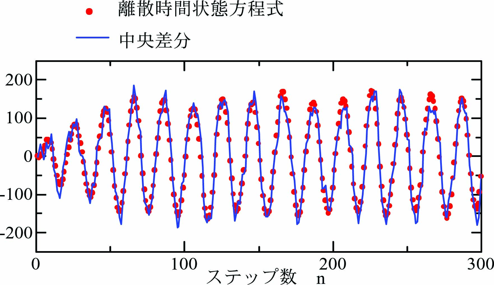
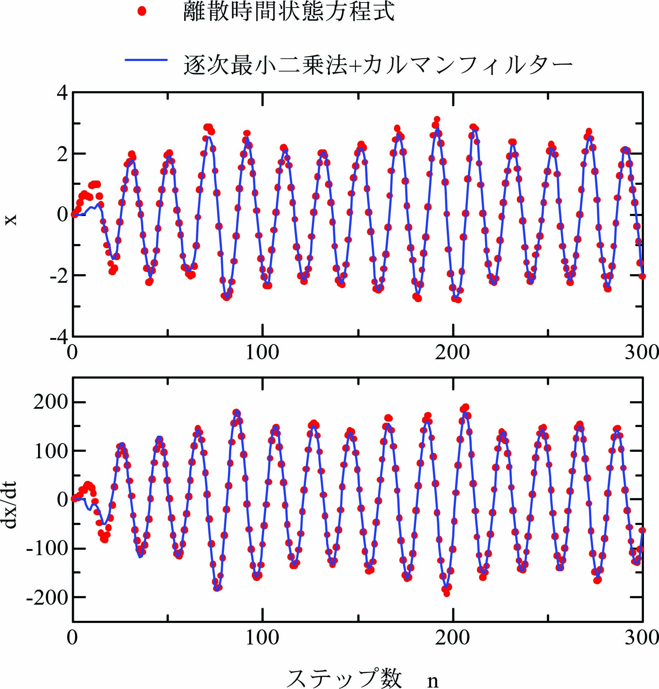

Kalmanフィルターは正確に状態量を推定できます。 観測対象の離散時間状態方程式が必要ですが、 その離散時間状態方程式が正確であるは限りません。 一方、逐次最小二乗法は離散時間状態方程式の係数行列を同定できます。 逐次最小二乗法で同定した離散時間状態方程式を利用してKalmanフィルターを実現し、数値実験で観察します。
観測対象となる状態量\(\mathbf{x}(n)=[x(n)~~\dot{x}(n)]^T\)を次の離散時間状態方程式で生成します。
\begin{align} \left. \begin{array}{@{\,}rl} \mathbf{x}(n+1)&=~\mathbf{P}\mathbf{x}(n)+\mathbf{Q}u(n)+\mathbf{w}(n)\\ y(n)&=~x(n) \end{array} \right\} \label{eq:RtnEqn} \end{align}ここに、\(\mathbf{u}\)は入力、\(\mathbf{x}\)は状態量、\(y\)は出力(観測値)、 \(\mathbf{P}\)は遷移行列、\(\mathbf{Q}\)は入力係数行列、\(\mathbf{C}\)は出力係数行列、 \(v\)は出力ノイズ、\(\mathbf{w}\)は入力ノイズです。 初期値\(\mathbf{x}(0)=[0~~~0]^T\)、出力ノイズ\(v\)と入力ノイズ\(\mathbf{w}\)は乱数により発生させます。
\(\omega_n=6.28\times 10\)[rad/s]、\(\zeta=0.2\)、サンプリング周期\(T=0.005\)[s]として 係数行列\(\mathbf P\)、\(\mathbf Q\)は次式となります。
\begin{align*} \mathbf{P}= \left[ \begin{array}{@{\,}cc} 0.9531&0.004222\\ -18.23&0.8370 \end{array} \right],~~~ \mathbf{Q}= \left[ \begin{array}{@{\,}c} -0.04691\\ 18.23 \end{array} \right],~~~ \mathbf{C}=[1~~0]. \label{eq:MatPQ} \end{align*}入力\(\)を次式の正弦振動で与えます。
\begin{align} u(n) = \sin(2\pi nfT)\label{eq:SineInp} \end{align}振動数\(f=10\)[Hz]とします。
観測対象\eqref{eq:RtnEqn}からは観測値として\(y(n)\)しか観測されないので、 \(y(n)\)の中央差分により\(\dot x(n)\)を求めます。
\begin{align} \dot x^\prime(n) = \frac{y(n+1)-y(n-1)}{2T} \label{eq:DiffX} \end{align}式\eqref{eq:DiffX}が未来値\(y(n+1)\)を含んでいるので、ここでは1ステップ過去(\(n-1\))を現在(n)とて記述します。 まず、逐次最小二乗法を適用するために次の変数を導入します。
\begin{align} \mathbf{y}(n)= \left[ \begin{array}{@{\,}c} x(n-1)\\ \dot x^\prime(n-1) \end{array} \right],~~~ \mathbf{z}(n)= \left[ \begin{array}{@{\,}c} x(n-1)\\ \dot x^\prime(n-1)\\ u(n-1) \end{array} \right]. \label{eq:Vec_xhat} \end{align}\(\mathbf{y}(n)\)と\(\mathbf{z}(n)\)の関係は次の一次式となります。
\begin{align} \mathbf{y}(n) = \hat{\mathbf{A}}\mathbf{z}(n),~~~\hat{\mathbf{A}}=[\hat{\mathbf{P}}~~~\hat{\mathbf{Q}}]. \label{eq:LstEQ} \end{align}ここに、\(\hat{\mathbf{A}}\)は逐次最小二乗法で推定される係数行列です。 \(\mathbf{x}(n)\)、\(u(n)\)で構成される \(\mathbf{y}(n)\)、\(\mathbf{z}(n)\)に対して次式の逐次最小二乗法を適用します。
\begin{align} \left. \begin{array}{@{\,}rl} \hat{\mathbf{A}}(n)&=~\hat{\mathbf{A}}(n-1)+\{\mathbf{y}(n)-\hat{\mathbf{A}}(n-1)\mathbf{z}(n)\}\mathbf{K}(n)\\ \mathbf{K}(n)&=~\mathbf{z}(n)^T\mathbf{R}(n)\\ \mathbf{R}(n)&=~\frac{1}{\lambda}\mathbf{R}(n-1)-\frac{1}{\mu}\mathbf{R}(n-1)\mathbf{z}(n)\mathbf{z}(n)^T\mathbf{R}(n-1)\\ \mu&=~\lambda+\mathbf{z}(n)^T\mathbf{R}(n-1)\mathbf{z}(n) \end{array}\label{eq:RtLstMtd} \right\} \end{align}\(\hat{\mathbf{A}}(n)\)、\(\mathbf{K}(n)\)、\(\mathbf{R}(n)\)の初期値をそれぞれ次式とします。
\begin{align*} \hat{\mathbf{A}}(0)= \left[ \begin{array}{@{\,}ccc} 0&0&0\\ 0&0&0 \end{array} \right],~~~ \mathbf{K}(0)= \left[ \begin{array}{@{\,}c} 0\\ 0 \end{array} \right],~~~ \mathbf{R}(0)= \left[ \begin{array}{@{\,}ccc} 1&0&0\\ 0&1&0\\ 0&0&1 \end{array} \right]. \end{align*}逐次最小二乗法\eqref{eq:RtLstMtd}によって同定される係数行列\eqref{eq:LstEQ}の\([\hat{\mathbf{P}}~~\hat{\mathbf{Q}}]=\mathbf{A}(n)\) として、定常Kalmanフィルターを次式とします。
\begin{align} \left. \begin{array}{@{\,}rl} {\mathbf{q}}(n+1)&=~\hat{\mathbf{P}}\hat{\mathbf{x}}(n)+\hat{\mathbf{Q}}\mathbf{u}(n)\\ e(n)&=~y(n)-\mathbf{C}\mathbf{q}(n)\\ \hat{\mathbf{x}}(n)&=~{\mathbf{q}}(n)+\mathbf{K}\mathbf{e}(n) \end{array}\label{eq:KalmanFilt} \right\} \end{align}Kalmanフィルター\eqref{eq:KalmanFilt}に用いるカルマンゲイン\({\mathbf K}\)はRiccati方程式の解\({\mathbf Z}(n)\)を用いて次式で与えられます。
\begin{align} \mathbf{K}={\mathbf Z}(n){\mathbf C}^T\{{\mathbf C}{\mathbf Z}(n){\mathbf C}^T+{\mathbf V}\}^{-1}. \label{eq:KalmanGain} \end{align}Riccati方程式は次式となります。
\begin{align} {\mathbf Z}(n+1)=\hat{\mathbf{P}}{\mathbf Z}(n)\hat{\mathbf{P}}^T-\hat{\mathbf{P}}{\mathbf Z}(n){\mathbf C}^T({\mathbf C}{\mathbf Z}(n){\mathbf C}^T+{\mathbf V})^{-1}{\mathbf C}{\mathbf Z}(n)\hat{\mathbf{P}}^T+{\mathbf W}.\label{eq:MatP_A} \end{align}Riccati方程式に使用するノイズの共分散行列\(\mathbf{V}\)、\(\mathbf{W}\)を次式とします。
\begin{align*} \mathbf{V}=5.271\times 10^{-5},~~~ \mathbf{W}= \left[ \begin{array}{@{\,}cc} 1.201\times 10^{-5}&0\\ 0&1.8314 \end{array} \right]. \end{align*}数値実験では\eqref{eq:RtnEqn}から\eqref{eq:MatP_A}の計算を１ステップとします。
下の図では観測対象(離散時間状態方程式)の\(\dot x(n)\)を赤い点、 逐次最小二乗法で用いた中央差分\eqref{eq:DiffX}による\(\dot x^\prime(n)\)を青線で示します。 \(\dot x^\prime(n)\)はノイズの影響で形状が乱れ、 \(\dot x(n)\)を再現できていない部分が観察されます。
下の図では観測対象(離散時間状態方程式)の結果 \(\mathbf{x}(n)\)を赤い点、 Kalmanフィルターの結果\(\hat{\mathbf{x}}(n)\)を青線で示します。 計算開始直後は係数行列が正確でないため、 \(\mathbf{x}(n)\)と\(\hat{\mathbf{x}}(n)\)は乖離していますが、 200ステップ以降は\(\mathbf{x}(n)\)と\(\hat{\mathbf{x}}(n)\)が一致しています。 \(\hat{\dot x}(n)\)は見事に\(\dot x(n)\)を再現し、 中央差分\eqref{eq:DiffX}による\(\dot x^\prime(n)\)で観察されたノイズの影響も解消されています。
5000ステップ実行後の逐次最小二乗法で同定された\(\hat{\mathbf{P}}\)、\(\hat{\mathbf{Q}}\)を次式に示します。
\begin{align*} \hat{\mathbf{P}}= \left[ \begin{array}{@{\,}cc} 0.9471&0.005101\\ -17.21&0.7023 \end{array} \right],~~~ \hat{\mathbf{Q}}= \left[ \begin{array}{@{\,}c} -0.01673\\ 33.36 \end{array} \right]. \end{align*}